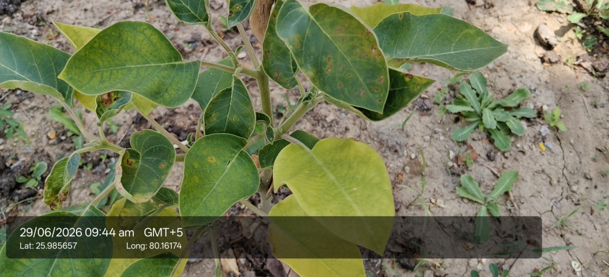

Visual record01 photographs

| Scientific name | Withania somnifera |
|---|---|
| Type | Perennial undershrub, family Solanaceae |
| Category | Shrubs |
Habitat & Growing Conditions
- Native to India, North Africa, and the Middle East. Grows wild and cultivated across drier parts of India. Very common in UP, MP, Rajasthan, and Gujarat. Fits your location near KanpurThrives in hot, dry subtropical climate. Loves UP summers at 25-40°C. Tolerates drought well. Sensitive to frost and waterloggingNeeds full sun – at least 6 hours daily. Grows poorly in shadePrefers well-drained, sandy loam to light red soil. Grows well in marginal, poor, and alkaline soils with pH 7.5-8.0. Hates heavy clay and standing waterFound wild on wastelands, field bunds, and roadsides. Commercially cultivated as a rabi crop in dry regions. Sown Oct-Nov, harvested Mar-Apr
Economic Importance
Economic notes pending.
Medicinal Importance
- Most important use. Roots, leaves, and berries used in Ayurveda, Unani, and Siddha for 3000+ years. Classified as a Rasayana – rejuvenator. Used as adaptogen for stress, anxiety, insomnia, and fatigue. Market name “Indian Ginseng”Pharmacological: Roots contain withanolides, alkaloids, and steroidal lactones. Used in formulations for arthritis, immunity, strength, male fertility, and as general tonic. Note: Consult a healthcare professional before any medicinal use. Not for pregnant womenCommercial crop: Major medicinal plant crop in India. MP’s Neemuch and Mandsaur are biggest producers. Roots graded and sold at ₹150-₹400/kg. Exported globally for herbal supplementsAyurvedic industry: Key ingredient in Chyawanprash, Ashwagandharishta, and hundreds of proprietary medicines by Dabur, Himalaya, Patanjali, etc
Field Notes
- Leaves applied on swelling and wounds. Berries used to coagulate milk for cheese-making in some regions. Seeds are diuretic